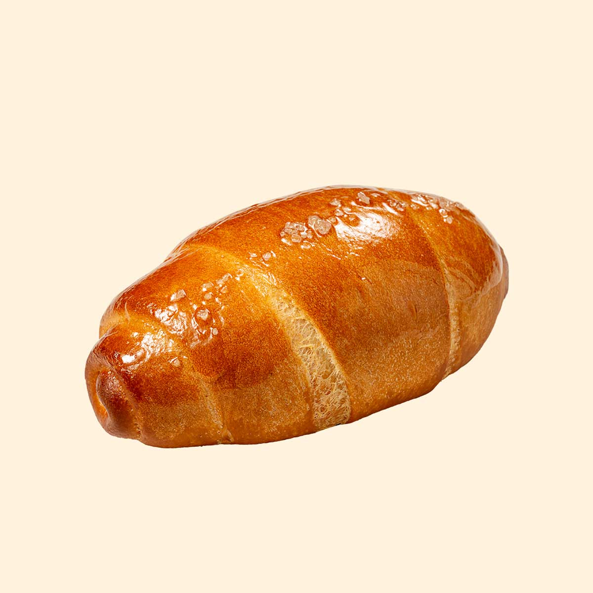

이예린
모두닥 라식라섹팀
하는 일
시력교정술 니즈가 있는 유저가 더 저렴한 가격에 높은 질의 수술을 받을 수 있도록, 유저에게 모두닥을 알리는 일을 하고 있습니다.
좋아하는 것
- 아침
- 점심
- 저녁
요즘 빠진 것
- 시사 (캐릭터)
- 우사기 (캐릭터)
모두닥에서 내가 풀고 싶은 문제
사람들이 의료정보, 좋은 병원이 필요할 때 자연스럽게 모두닥부터 떠올리도록 만들고 싶습니다.

모두닥 라식라섹팀
시력교정술 니즈가 있는 유저가 더 저렴한 가격에 높은 질의 수술을 받을 수 있도록, 유저에게 모두닥을 알리는 일을 하고 있습니다.
사람들이 의료정보, 좋은 병원이 필요할 때 자연스럽게 모두닥부터 떠올리도록 만들고 싶습니다.